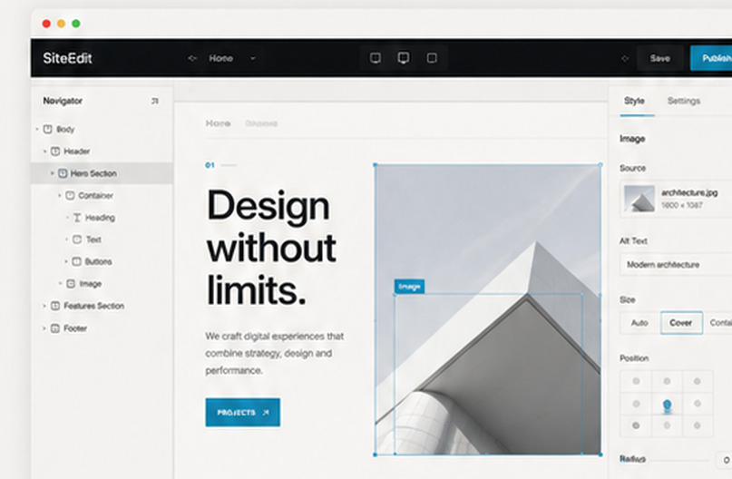
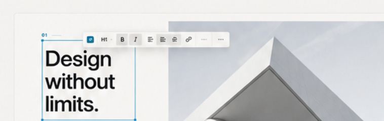
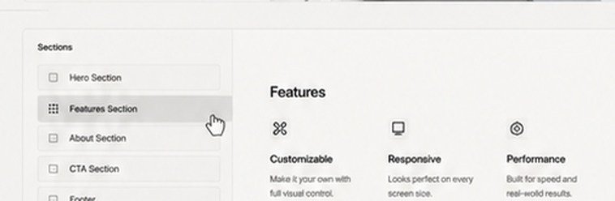
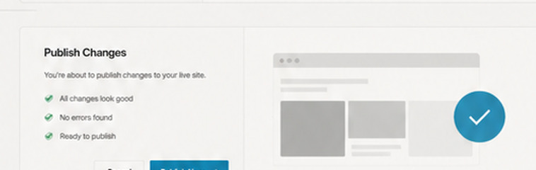
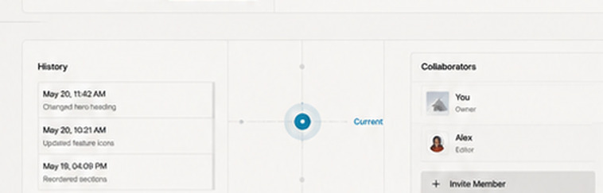

Software / SiteEdit
SiteEdit
Design. Edit. Publish. Visually.
A visual website editor for custom HTML, CSS and JavaScript sites—made to keep everyday content changes visual without taking the code away.
Explore SiteEdit
01
Edit visually.
Click directly into the page and edit text, imagery and styles where they actually appear.

02
Control structure.
Add, remove and reorder sections while keeping the underlying site structure intact.

03
Publish with ease.
Push finished changes back to the site through a workflow designed for people who don't want to manage code manually.

04
Built for progress.
SiteEdit continues to evolve around responsive editing, WYSIWYG accuracy and a workflow that stays understandable.
